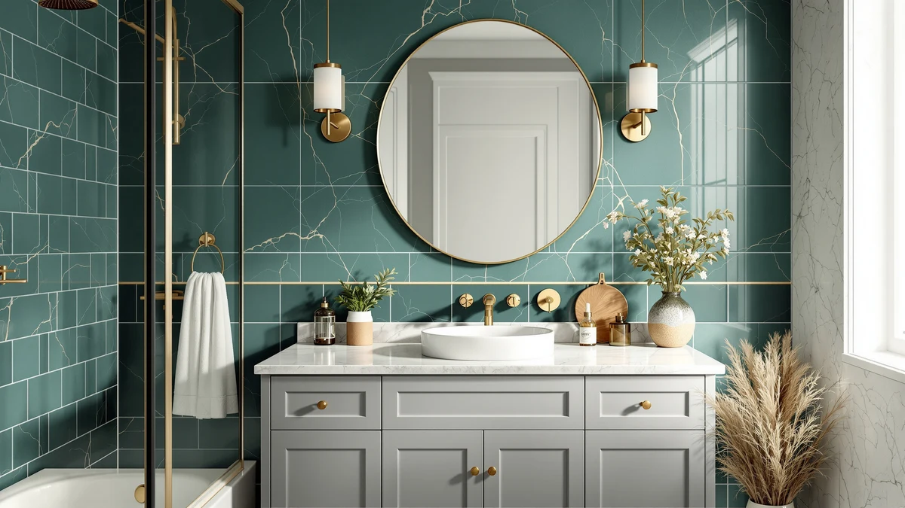

The Best Farmhouse Vanity Cabinets (2026)
Prices and picks verified as of September 2026. Independent, reader-supported reviews.


Quick Answer
We compared seven of the best farmhouse vanity cabinets on width, material, hardware and price, from a compact 30-inch cabinet to a 48-inch barn-door statement piece. The chartustriable 36 Inch Bathroom Vanity is our top pick because it packs the most farmhouse-style storage into its price, but the picks below cover smaller bathrooms, tighter budgets and larger spaces too.
Our pick: chartustriable 36 Inch Bathroom Vanity — $349.99 Check Price on Amazon
Bottom line: our top pick is the chartustriable 36 Inch Bathroom Vanity with Sink & Faucet & at $349.99. The best budget option is the VASAGLE LIRY Collection - Bathroom Wall Cabinet at $54.99.
Things to Know Before You Buy
- Measure before you shop. Farmhouse vanities in this roundup range from 30 to 48 inches wide, and a few inches of miscalculation can block a door or drawer from opening fully.
- Most are MDF, not solid wood. Every cabinet here uses MDF or engineered wood construction, which keeps the price down and resists warping better than raw wood in a humid bathroom.
- Sink tops aren't included on every model. A few of these vanities ship as cabinets, so confirm whether a sink basin and faucet holes are included before you order plumbing fixtures.
- Soft-close hardware isn't universal. Check the individual listing if quiet drawers matter to you, since not every model in this price range includes it.
- Barn-door styles need extra clearance. A sliding barn-door vanity looks striking but requires open wall space beside the cabinet for the door to slide across.
Finding the best farmhouse vanity cabinets means balancing rustic style with everyday function, since a vanity has to survive splashed water, slammed drawers and years of morning rushes while still looking like a piece of furniture. Farmhouse design leans on shaker-style doors, black or oil-rubbed bronze hardware, and warm wood tones, but the details that matter most are the ones you touch daily: how the drawers glide, whether the doors seal against humidity, and how much usable storage sits below the sink. We looked at models ranging from a compact 30-inch cabinet to a 48-inch double-door piece with a barn-door front, comparing their materials, dimensions and included hardware.
Our top pick is the chartustriable 36 Inch Bathroom Vanity. At $349.99, it gives you a full 36 inches of counter and storage in an MDF cabinet built around the farmhouse look, at a price that undercuts most vanities in this size class. If that particular finish or handle style doesn't fit your bathroom, the runner-up from the same maker offers nearly the same footprint with a different door treatment, and five more cabinets below cover everything from a 31-inch fit to a 48-inch barn-door statement piece.
Before you buy a farmhouse vanity cabinet, measure your bathroom twice. Width matters most, but depth and door-swing clearance trip up more buyers than a wrong color ever does. We also compared how each cabinet is finished, since MDF farmhouse vanities vary widely in how well their coating resists steam and splashes, and we noted where a lower price trades away soft-close hardware or a factory-installed sink top.
Why You Should Trust Us
This guide is written and maintained by Ilane Tall, who covers bathroom fixtures and furniture for Best Bathroom Vanities. We do not run a fake testing lab, and we don't claim to have installed every cabinet in this roundup ourselves. Instead, we research each product's published dimensions, materials and included hardware, cross-check pricing against the retailer listing, and read through verified owner reviews to flag recurring complaints about assembly, finish quality or missing parts. When a listing's claims don't match what owners report, we note the discrepancy rather than repeat the marketing copy.
How We Picked
We started by narrowing the field to vanities explicitly marketed as farmhouse or modern-farmhouse style, since that rules out the sleek floating vanities and ornate traditional cabinets that don't fit the look. From there, we compared cabinet width, material and hardware finish across dozens of listings, prioritizing models with shaker-panel doors, black or bronze pulls, and either a butcher-block or ceramic sink top. We also weighed price against what's actually included: a cabinet-only listing at a low price isn't a better deal than a slightly pricier vanity that ships with the sink and faucet holes already cut. Products with a pattern of assembly or missing-parts complaints in verified reviews lost out to alternatives with cleaner track records.
How We Compared
We compared each of these seven farmhouse vanity cabinets on published dimensions, material, drawer and door count, and price per inch of width, using the specifications listed by the manufacturer and retailer. We researched verified owner reviews for each model to see how buyers described the finish, the hardware and the assembly process, and we noted recurring themes, such as whether a cabinet arrived with scratched panels or whether the drawers stuck after a few weeks of use. Where two vanities from the same brand were nearly identical, we compared them on the details that differ, like handle style or door configuration, rather than treating them as duplicates.
Our Picks

chartustriable 36 Inch Bathroom Vanity
What we like
- 36 inches of counter and cabinet space for the price
- Shaker-style doors and farmhouse hardware match the style buyers search for
- MDF construction resists warping better than raw wood in a humid bathroom
Flaws but not dealbreakers
- MDF isn't as durable long-term as solid hardwood
- Assembly requires two people to manage the cabinet's size safely
| Material | MDF / engineered wood |
| Size | 36 Inch |
The chartustriable 36 Inch Bathroom Vanity is our top pick because it delivers the most farmhouse-style storage per dollar in this roundup. At $349.99 for a 36-inch cabinet, it undercuts several competitors that charge more for the same footprint, and the shaker-panel doors and dark hardware give it the rustic look most farmhouse shoppers are after. The MDF construction is sealed to resist the steam and splashes a bathroom vanity deals with daily, which matters more than the label "MDF" might suggest to a shopper used to solid-wood furniture.
Owners report that the cabinet arrives well packaged and that the finish looks close to the product photos, though a few reviewers note the included assembly instructions could be clearer for first-timers. If you're outfitting a primary bathroom and want the largest usable storage footprint without moving up to a 48-inch model, this is the vanity we'd point you to first.

36" Farmhouse Bathroom Vanity with
What we like
- Same 36-inch width and MDF build as our top pick, at ten dollars less
- Farmhouse door styling with coordinated hardware
- Comparable storage capacity for daily bathroom essentials
Flaws but not dealbreakers
- Fewer verified owner reviews than our top pick, so the track record is thinner
- Finish options may be more limited depending on availability
| Material | MDF / engineered wood |
| Size | 36 Inch |
This second chartustriable vanity shares the same 36-inch width and engineered-wood construction as our top pick, and at $339.99 it costs slightly less. We compared the two side by side and found the core cabinet dimensions and door count match closely, with the main difference coming down to hardware finish and panel detailing rather than storage capacity.
We list it as a runner-up rather than a tie because it has a smaller pool of verified reviews to draw conclusions from, so we can't yet confirm it holds up as consistently as our top pick over time. If the exact look of our first pick isn't available in your preferred finish or is out of stock, this is the closest substitute in the lineup.

AMERLIFE Farmhouse Bathroom Vanity with
What we like
- 31-inch width fits bathrooms that can't accommodate a 36-inch cabinet
- Lower price than the 36-inch picks above
- Farmhouse door and hardware styling consistent with the rest of the lineup
Flaws but not dealbreakers
- Less counter and storage space than the wider models in this list
- Owners report the included sink hardware may need extra sealant at installation
| Material | MDF / engineered wood |
| Size | 31" |
The AMERLIFE Farmhouse Bathroom Vanity is built for bathrooms where 36 inches simply won't fit. At 31 inches wide and $239.99, it's both narrower and less expensive than our top two picks, making it the option we'd recommend for a secondary bathroom, powder room, or any space where you measured twice and 36 inches came up short.
The MDF cabinet construction and shaker-style doors keep it visually consistent with the larger vanities in this roundup, so you're not sacrificing style for size. According to verified buyer feedback, the main installation note is to check the seal around the sink basin, since a handful of owners mention adding extra caulk to prevent water from seeping behind the cabinet.

VASAGLE LIRY Collection - Bathroom
What we like
- Lowest price in this roundup by a wide margin
- Farmhouse styling matches the rest of a coordinated bathroom
- Compact 18.1-inch width fits tight spaces the larger vanities can't
Flaws but not dealbreakers
- At 7.9 inches deep and 24 inches tall, this is a storage cabinet, not a full sink vanity
- Not a substitute for the sink-and-counter vanities elsewhere in this list
| Material | MDF / engineered wood |
| Size | 7.9"D x 18.1"W x 24"H |
The VASAGLE LIRY Collection cabinet is the budget pick in this roundup, but it's worth being upfront about what it actually is. At 7.9 inches deep, 18.1 inches wide and 24 inches tall, this is a small farmhouse-style storage cabinet, not a full vanity with a sink basin and countertop. We included it because it's the lowest-priced way to bring the farmhouse look into a bathroom, whether as a side cabinet next to an existing sink or as standalone storage in a small space.
If you need a complete replacement vanity with a sink and counter, look to the AMERLIFE or YOURLITE picks above instead. But if you want an inexpensive way to add farmhouse-style storage, such as a place for towels or toiletries, next to a vanity you're keeping, this is the cheapest option we compared that still matches the aesthetic.

YOURLITE Bathroom Vanity 36" Farmhouse
What we like
- 36-inch width at less than half the price of our top pick
- Farmhouse door styling and hardware consistent with pricier options
- Good fit for budget renovations that still need a full-size vanity
Flaws but not dealbreakers
- Reviewers consistently note the finish is thinner than the higher-priced picks
- Drawer glides feel less substantial than the chartustriable models
| Material | MDF / engineered wood |
| Size | 36" |
The YOURLITE Bathroom Vanity 36 Farmhouse undercuts every other full-size vanity in this roundup on price, at $159.99 for the same 36-inch width as our top pick. That price gap is the whole story here: if your budget is the deciding factor and you still need a genuine sink vanity rather than a storage cabinet, this is the one we'd point you to.
The tradeoff shows up in the details rather than the dimensions. Reviewers consistently note that the finish and drawer hardware feel a step below the pricier chartustriable vanities, though the cabinet itself holds up for normal daily use. For a guest bathroom or rental property where cost matters more than long-term hardware feel, it's a reasonable compromise.

SOLIDEE 48" Barn Door Bathroom
What we like
- 48 inches of counter and storage, the largest in this roundup
- Sliding barn-door front doubles as a design statement
- More storage volume than any other vanity compared here
Flaws but not dealbreakers
- Highest price in the lineup at $499.90
- Barn door needs open wall clearance to slide, which not every bathroom layout allows
| Material | MDF / engineered wood |
| Size | 48" |
The SOLIDEE 48 Barn Door Bathroom vanity is the largest and most expensive cabinet we compared, and it's built for bathrooms with the space to match. At 48 inches wide, it offers noticeably more counter and storage than the 36-inch picks above, and the sliding barn door is a genuine style choice rather than a cosmetic add-on, since it swaps out the usual hinged doors for a track-mounted panel.
That barn door is also the main planning consideration. It needs clear wall space beside the cabinet to slide open, so measure your layout before ordering, not only the cabinet's footprint. For a primary bathroom renovation where budget is secondary to making a statement piece, this is the vanity in our lineup built for that job.

Aitjunz 30" Farmhouse Bathroom Vanity
What we like
- 30-inch width fits some of the tightest bathroom layouts in this roundup
- Mid-range price between the budget and premium picks
- Farmhouse door and hardware styling consistent with the larger vanities
Flaws but not dealbreakers
- Least counter space of the full sink vanities in this list
- Storage capacity is limited compared to the 36-inch and 48-inch options
| Material | MDF / engineered wood |
| Size | 30 Inch |
The Aitjunz 30 Farmhouse Bathroom Vanity slots in as the most compact full sink vanity we compared, at 30 inches wide and $229.99. It's aimed at powder rooms and small guest bathrooms where even the AMERLIFE's 31-inch footprint is a stretch, without dropping down to the VASAGLE's storage-cabinet-only format.
The farmhouse door styling and hardware match the rest of this roundup, so it doesn't look out of place if you're coordinating multiple bathrooms in the same house. Owners report that the smaller footprint makes it easier to maneuver into tight spaces during installation, though the tradeoff is less under-sink storage than any of the 36-inch or 48-inch picks.
Quick Comparison
| Product | Material | Price | Rating | Best for | Get it |
|---|---|---|---|---|---|
| chartustriable 36 Inch Bathroom Vanity | MDF / engineered wood | $349.99 | 4 | Most bathrooms, best overall value | View on Amazon → |
| 36" Farmhouse Bathroom Vanity with | MDF / engineered wood | $339.99 | 4 | Alternative to our top pick | View on Amazon → |
| AMERLIFE Farmhouse Bathroom Vanity with | MDF / engineered wood | $239.99 | 4 | Smaller 31-inch bathrooms | View on Amazon → |
| VASAGLE LIRY Collection - Bathroom | MDF / engineered wood | $54.99 | 4 | Budget storage, not a full vanity | View on Amazon → |
| YOURLITE Bathroom Vanity 36" Farmhouse | MDF / engineered wood | $159.99 | 4 | Lowest price for a full 36-inch vanity | View on Amazon → |
| SOLIDEE 48" Barn Door Bathroom | MDF / engineered wood | $499.90 | 4 | Large bathrooms wanting a statement piece | View on Amazon → |
| Aitjunz 30" Farmhouse Bathroom Vanity | MDF / engineered wood | $229.99 | 4 | Powder rooms and compact spaces | View on Amazon → |
What makes a bathroom vanity farmhouse style?
Farmhouse vanities typically use shaker-panel doors, black or oil-rubbed bronze hardware, and a wood-toned or painted MDF finish that mimics reclaimed wood.
How much clearance do I need for a farmhouse vanity cabinet?
Beyond the cabinet's listed width, leave room for the doors and drawers to open fully, and for a barn-door model like the SOLIDEE, clear wall space beside the cabinet for the door to slide across.
The Competition
We also looked at solid hardwood farmhouse vanities priced well above $600, but left them out of this roundup because the price premium over the MDF options here doesn't consistently translate to better owner-reported durability, and most shoppers searching for the best farmhouse vanity cabinets are working with a tighter budget. We passed on several floating or wall-mounted vanities that use farmhouse-style hardware, since a floating design changes the installation and plumbing requirements enough that it doesn't compare fairly against the freestanding cabinets in this list. We also excluded a handful of cabinet-only listings that don't specify whether a sink basin or faucet holes are included, since that ambiguity makes it too easy for a buyer to end up with an incomplete vanity.
Frequently Asked Questions
What makes a bathroom vanity farmhouse style?
Farmhouse vanities typically use shaker-panel doors, black or oil-rubbed bronze hardware, and a wood-toned or painted MDF finish that mimics reclaimed wood. The style favors visible hardware and flat-panel doors over the glossy, handle-less look of a modern vanity.
How much clearance do I need for a farmhouse vanity cabinet?
Beyond the cabinet's listed width, leave room for the doors and drawers to open fully, and for a barn-door model like the SOLIDEE, clear wall space beside the cabinet for the door to slide across. Measuring your bathroom's actual door swing and walking space prevents the most common installation surprises.
Do these farmhouse vanity cabinets come with a sink included?
It varies by model, so check before you order plumbing fixtures. The full-size vanities in this roundup are built as sink cabinets, but a compact piece like the VASAGLE LIRY Collection is a storage cabinet rather than a sink vanity, so confirm what's included in the listing before you buy.